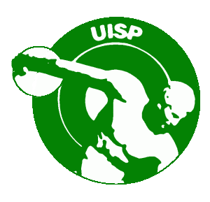

Praticando la ginnastica acrobatica in italia è possibile partecipare a tre differenti campionati:
Federazione Ginnastica ItaliaLa Federazione Ginnastica d'Italia fondata nel 1869 ed eretta ad Ente Morale nel 1896 ha la sede nazionale in Roma. La F.G.I., affiliata agli organismi internazionali competenti quali la F.I.G. - Federazione Internazionale di Ginnastica e la U.E.G. - Unione Europea di Ginnastica, è riconosciuta dal CONI - Comitato Olimpico Nazionale Italiano e dal CIO - Comitato Olimpico Internazionale. Il campionato nazionale di Federazone (FGI) offre l'opportunità a ginnasti grandi e piccoli di partecipare al campionato silver (categorie L1-L2 open/allievi) e gold (L3-L4-L5 open/allievi, Age Group 10-16, 11-18, 12-19 e Senior). |
|
 |
Federazione Italia Sport Acrobatici e CoreograficiIl campionato nazionale Fisac si divide invece tra la categoria C (C3 senior/junior, C1, C2); categoria Youth (dagli 8 a 16 anni); serie B e Age Group (8-16, 11-18, 12-19 e Senior). |
|  |
Uisp sport per tuttiInfine è possibile partecipare al campionato UISP sport per tutti, che oltre ad avere le categorie che vanno dalla prima alla quarta, la serie B e la serie A1-A2, inoltre permette ai ginnasti più piccoli di gareggiare nella fascia base. |